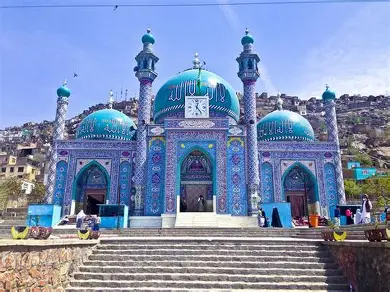
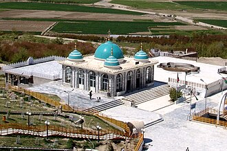
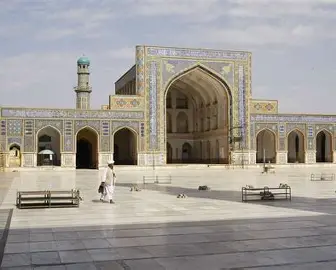
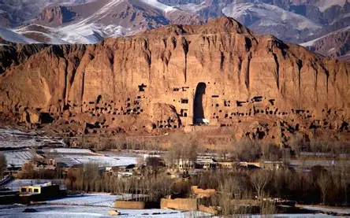
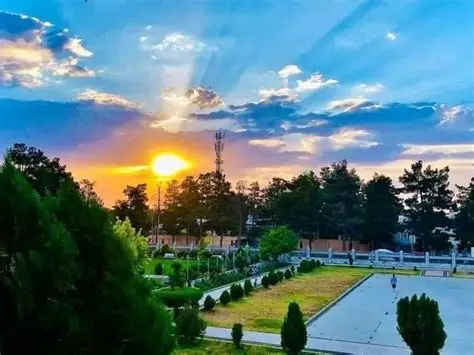
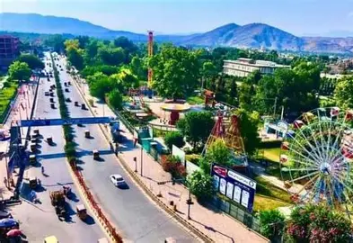

Kabul
Capital city with rich culture, and center of education, literature, art, and modern urban life.

Kandahar
Famous for traditional clothing and pomegranates.

Herat
Center of Persion poetry and art.

Bamyan
Mountain landscapes and ancient culture.

Maymana
Maymana, the cultural heart of Faryab province in northern Afghanistan.

Jalalabad
Jalalabad, a green and vibrant city in easterm Afghanistan.